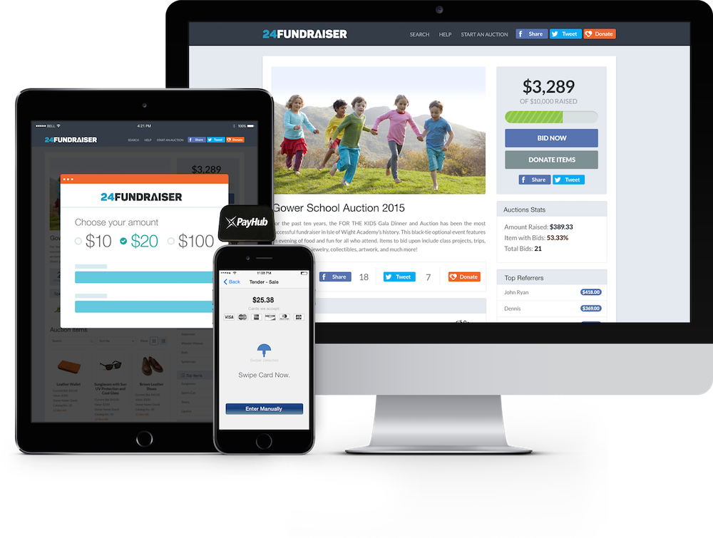

Proving the Concept
In our first meeting with Tom, we both thought that we would be discussing a fundraising platform. However, by the end of the meeting, we concluded that the right place to start was with a custom software to support the unique service aspect of his business. It wasn't perfect, but it didn't need to be — as a proof of concept, it helped him secure capital and begin to run trials with customers, using Facebook to acquire initial users.
When I showed the first prototype to people and saw how they responded — [that] was the most exciting part for me. People just got the 24fundraiser concept and how the platform worked. To see early adopters’ faces on social media was amazing.Tom Kelly
